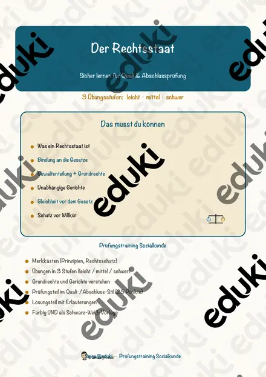
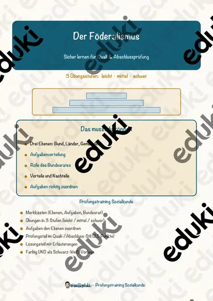
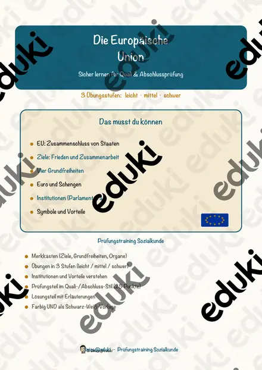
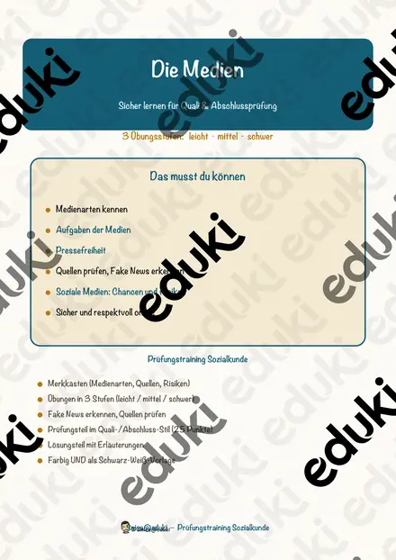
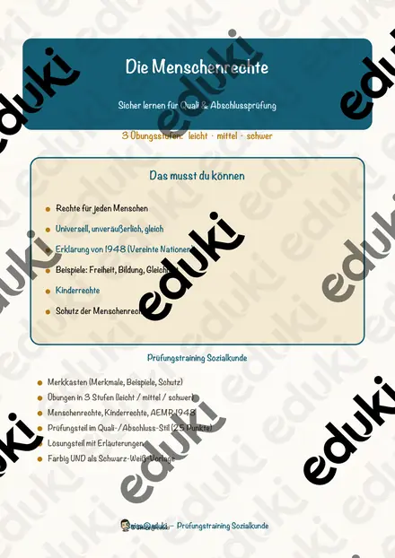
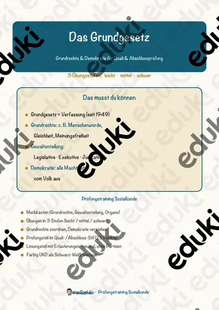

Wahlen und Demokratie – Prüfungstraining Sozialkunde (Klasse 9)
Prüfungstraining Sozialkunde: Wahlen und Demokratie – gezielte Vorbereitung auf Quali und Abschlussprüfung
Dieses kompakte Übungsheft trainiert alle prüfungsrelevanten Grundlagen zu Wahlen und Demokratie – von Merkkästen über Beispiele bis zum punktebewerteten Prüfungsteil im Prüfungsstil. Ideal für die gezielte Wiederholung, den Wochenplan, Vertretungsstunden, Freiarbeit, Nachhilfe und die Prüfungsvorbereitung im Fach Sozialkunde/Politik. Die Darstellung ist neutral und überparteilich – es werden keine politischen Parteien genannt.
Inhalt:
- Hinweise für Lehrkräfte mit Kompetenz- und Lehrplanbezug
- Grundlagen mit Merkkästen: Demokratie, aktives und passives Wahlrecht, die fünf Wahlgrundsätze, Ablauf einer Wahl und Mehrheiten
- Übungen in drei Niveaustufen (leicht ★ / mittel ★★ / schwer ★★★)
- Prüfungsteil im Prüfungsstil mit 25 Punkten und Bewertungsschlüssel
- Ausführlicher Lösungsteil mit Erläuterungen (nur für die Lehrkraft)Kompetenzen:
- das Prinzip der Demokratie erklären
- die fünf Wahlgrundsätze benennen und erläutern
- aktives und passives Wahlrecht unterscheiden
- den Ablauf einer Wahl beschreiben
- die Bedeutung von Wahlen begründen
Format:
Das Material liegt in einer farbigen Version UND als drucksparende Schwarz-Weiß-Variante vor. Das Thema wird allgemein und überparteilich behandelt.
Umfang: 8 Seiten (Hinweise, Grundlagen, Übungen, Prüfungsteil, Lösungen).
Ähnliche Materialien

Der Rechtsstaat – Prüfungstraining Sozialkunde (Klasse 9)

Der Föderalismus – Prüfungstraining Sozialkunde (Klasse 9)
Die Vereinten Nationen – Prüfungstraining Sozialkunde (Klasse 9)

Die Europäische Union – Prüfungstraining Sozialkunde (Klasse 9)

Die Medien – Prüfungstraining Sozialkunde (Klasse 9)

Die Menschenrechte – Prüfungstraining Sozialkunde (Klasse 9)

Das Grundgesetz und die Grundrechte – Prüfungstraining Sozialkunde (Klasse 9)